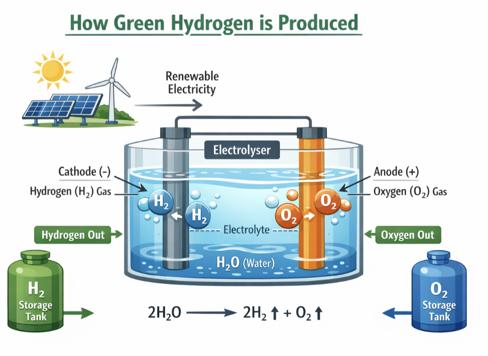

Energy • Chemistry
Green Hydrogen: The fuel that could power a cleaner future
Imagine a fuel that produces no carbon dioxide, no smoke, and no air pollution — just water. It sounds like science fiction, but it already exists. It’s called green hydrogen, and many scientists believe it could play a major role in tackling climate change.
But what exactly is green hydrogen? How is it made? And why are governments and engineers around the world so interested in it?
Let’s break it down.
What Is Hydrogen Fuel?
Hydrogen is the most abundant element in the universe. It’s incredibly light and highly reactive. When hydrogen burns, it reacts with oxygen to produce energy — and the only by- product is water (H₂O).
That sounds perfect. So why aren’t we already using hydrogen everywhere?
The challenge is that hydrogen rarely exists on its own. On Earth, it is usually bonded to other elements, such as oxygen in water (H₂O) or carbon in methane (CH₄). To use hydrogen as a fuel, we first need to separate it from these compounds — and that requires energy.
How that energy is produced makes all the difference.
The Problem with “Grey” Hydrogen
Today, most hydrogen is made from natural gas through a process called steam methane reforming. In simple terms, methane (CH₄) reacts with steam at high temperatures to produce hydrogen and carbon dioxide.
This type of hydrogen is called grey hydrogen.
The problem? It releases large amounts of CO₂ — the very greenhouse gas we are trying to reduce. In fact, global hydrogen production currently emits hundreds of millions of tonnes of carbon dioxide each year.
So hydrogen itself may be clean when used, but producing it often isn’t.
That’s where green hydrogen comes in.
What Makes Hydrogen “Green”?
Green hydrogen is produced using renewable electricity — from sources like wind or solar power — to split water into hydrogen and oxygen. This process is called electrolysis.
How Electrolysis Works
Electrolysis uses electricity to break water (H₂O) into hydrogen (H₂) and oxygen (O₂).
It happens inside a device called an electrolyser, which contains:
- Two electrodes (a positive anode and a negative cathode)
- An electrolyte that allows ions to move between them
When electricity flows through the water:
- At the cathode, hydrogen gas forms.
- At the anode, oxygen gas forms.
The chemical reaction is:
2H₂O → 2H₂ + O₂
If the electricity comes from renewable sources, the entire process produces no greenhouse gases. That’s why it’s called green hydrogen.

Why Is Green Hydrogen Important?
Renewable energy like solar and wind is growing rapidly, but it has one big weakness: it’s intermittent. The sun doesn’t always shine, and the wind doesn’t always blow.
Hydrogen solves this problem because it can store energy.
When there is excess renewable electricity, it can be used to produce hydrogen. That hydrogen can then be stored in tanks and used later to generate electricity or power vehicles.
In other words, hydrogen acts like a chemical battery.
This makes it especially useful for sectors that are hard to electrify, such as:
- Heavy industry (steel and cement production)
- Long-distance transport (ships and airplanes)
- Heavy trucks
- Energy storage for national grids
For example, steel production traditionally uses coal to remove oxygen from iron ore, releasing CO₂. Hydrogen can replace coal in this process, producing water instead of carbon dioxide.
How Is Green Hydrogen Used?
Hydrogen can be used in two main ways:
1. Fuel Cells
A hydrogen fuel cell generates electricity by combining hydrogen and oxygen in a controlled reaction. Unlike combustion, this process is highly efficient and produces only water.
Hydrogen fuel cell vehicles already exist. Companies such as Toyota have developed hydrogen-powered cars like the Toyota Mirai.
2. Industrial Feedstock
Hydrogen is already widely used in industries such as ammonia production (for fertilisers) and oil refining. Replacing grey hydrogen with green hydrogen in these industries could significantly reduce global emissions.
The Engineering Challenges
If green hydrogen is so promising, why isn’t it everywhere already?
There are three main challenges:
1. Cost
Green hydrogen is currently more expensive than grey hydrogen. Electrolysers are costly, and renewable electricity must be cheap and abundant to make the process competitive.
However, as solar and wind energy prices continue to fall, green hydrogen is becoming more affordable.
2. Efficiency
Electrolysis and hydrogen fuel cells are not perfectly efficient. Energy is lost at each stage — when producing hydrogen, compressing it, transporting it, and converting it back into electricity.
Scientists and chemical engineers are working to design better catalysts and more efficient electrolysers to reduce these losses.
3. Storage and Transport
Hydrogen has a very low density. To store useful amounts, it must either be compressed to high pressures or cooled to extremely low temperatures (−253°C) to become liquid hydrogen.
Both methods require energy and specialised infrastructure.
The Global Race for Green Hydrogen
Countries around the world are investing heavily in hydrogen technology. The European Union has launched hydrogen strategies aiming to install large-scale electrolysers. Countries like Japan, Australia and Germany are also building major hydrogen projects.
The idea is not to replace electricity, but to complement it — especially in areas where batteries are impractical.
Is Green Hydrogen the Perfect Solution?
Green hydrogen is not a magic fix for climate change. It requires vast amounts of renewable electricity and new infrastructure. If not carefully managed, it could also compete with water supplies in dry regions.
However, many experts believe it will be an essential part of a low-carbon energy system — particularly for heavy industry and long-distance transport.
Instead of asking whether hydrogen will replace fossil fuels entirely, a better question might be: Where is hydrogen the smartest solution?
A Future Powered by Chemistry
Green hydrogen is a powerful example of how chemistry and engineering can help solve global problems.
At its heart, the idea is simple: use clean electricity to split water, store energy in chemical form, and release it again without polluting the atmosphere.
It combines fundamental chemical principles — redox reactions, catalysis, thermodynamics — with large-scale engineering challenges.
And perhaps most exciting of all, it shows how understanding basic science can lead to technologies that reshape the world.
The next time you see water, imagine it not just as something to drink — but as a potential fuel for the future.